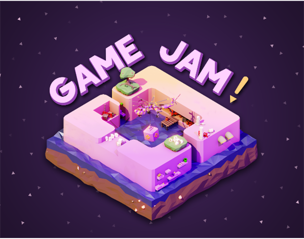

Creating connections and networking in Games Dev: WWH?
In the growingly competitive scene of games development, building connections with important figures or reliable outsource agencies may be able to lessen the burden of expectations and increase your workflow; However, it’s not just about building a portfolio and contacting employers, it’s about making new meaningful relationships with people in the same field that will help you learn and advance your career. Though, what exactly does it entail, why would you want to do it, and how should you network? These are the questions I will provide answers for in this post today.

Networking, especially in the games industry, does not only include in-person, physical meetings and events, it also includes a plethora of online methods that opportinuties to meet new people and it can also be easier than ever due to the plethora of social media apps such as Twitter (X), Discord, or even LinkedIn (for more professional connections). Physical social events are a great way to make new connections, however these online methods of networking should not be ruled out and can be just as important – it’s not just about going up to a company booth and asking for jobs!
Though, why would you want to do this? Well, even if you are an introvert and like to avoid social interaction, networking is still an important step you will need to get used to in your Games Dev career as you won’t be able to deal with everything by yourself. Networking opens up opportunities to learn many new skills and techniques you may not have known before. It also opens the door to other departments of technology development and establish partnerships with them – from anything between software development to hardware brands. Collaborating with other developers can also bring new ideas and perspectives to the table by boucing off different ideas off of one another - getting unbiased feedback from other developers in the industry is an invaluable experience you won’t be able to get in your day to day and it may result in unique and innovative ideas that may define the next game genre.
Networking can also help you build confidence in your career, as a lot of people in the creative industries suffer from a mental affliction called “impostor syndrome”(1); a feeling that you don’t think you’re a “real” game developer and are simply an outsider to the scene, not knowing what you’re actually doing. However, networking with other developers will allow you to learn more about the industry, the jobs and what their roles imply as well as the companies behind them; you’ll start feeling less like an outsider. Doing this can also help you discover ‘hidden’ jobs that have not been officially posted, allowing you to discuss the opportunity to take them on before they’ve been officially posted.

Next, how does one network? Well, social media platforms, such as the ones mentioned previously, all have a community feature (such as servers in Discord, Community Groups in Twitter or -quite literally- networks in LinkedIn) where you can find like-minded people such as yourself, making it easier to get along with the people in your field – whether this be a specific group for the type of game genre you prefer, or a support group. You never know what kinds of people you may find in these communities, and it’s always good to have a reliable contact in other fields of development other than your own. Game Jams are also an invaluable way to get new experiences and meet new people in team projects – they last for only a few weeks usually (i.e. they’re not a long-term commitment) but give ample opportunity to befriend a project-mate which may have skills that you are not proficient at. Don’t be afraid to reach out and contact individual people too for help or collaboration, whether this be across LinkedIn or Twitter, especially when they are willing to receive DMs – the worst any professional game developer will do is decline, but otherwise you may have a gateway to new information just because you had the courage to take the first step.
I believe that physical events are also a great way to establish new parterships, or simply meet someone new, as it gives a face and a voice to your brand and makes every experience more personal. Conventions, scheduled meetups from (e.g.) discord groups, or any other similar event are all a venue where all manner of people attend are all places where you’ll be able to make contact with and potentially befriend, or make into a new buisness partner.
However, in order to make contact, it helps to be able to show who you are and what you’ve done throughout your career; making a portfolio and adding any necessary contact information on LinkedIn can act as a virtual business card, showing off your projects and achivements throughout your Game Dev journey. As just stated, physical business cards themselves are also a good way to attach your personal identity to your brand and make an impression through presenting yourself in a professional manner, with any contact information the other party may need. Having an online presence, such as being a content creator, may also provide you with more ground to stand on when networking with others – it at least provides a quick way to view all of your work and the effort you put into your projects (if you have uploaded dev logs) and lets others quickly see what you’re about. I have spoken on how to effectively advertise yourself and do it through content creation in my previous blog.
References:
(1) https://impostorsyndrome.com/articles/are-creative-people-more-susceptible-to-impostor-syndrome/